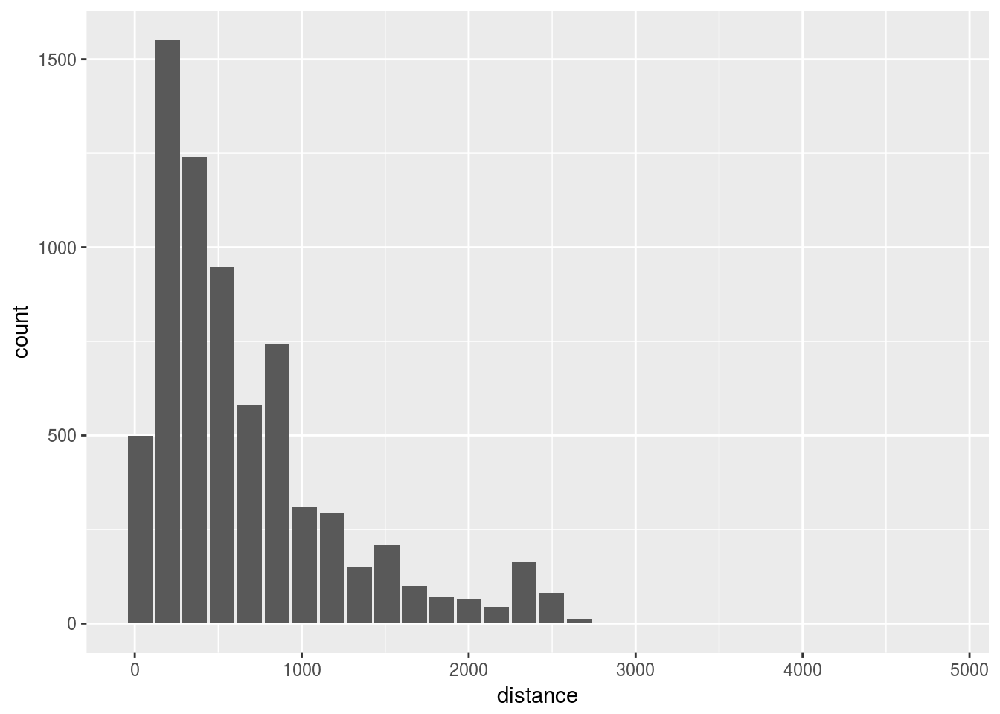
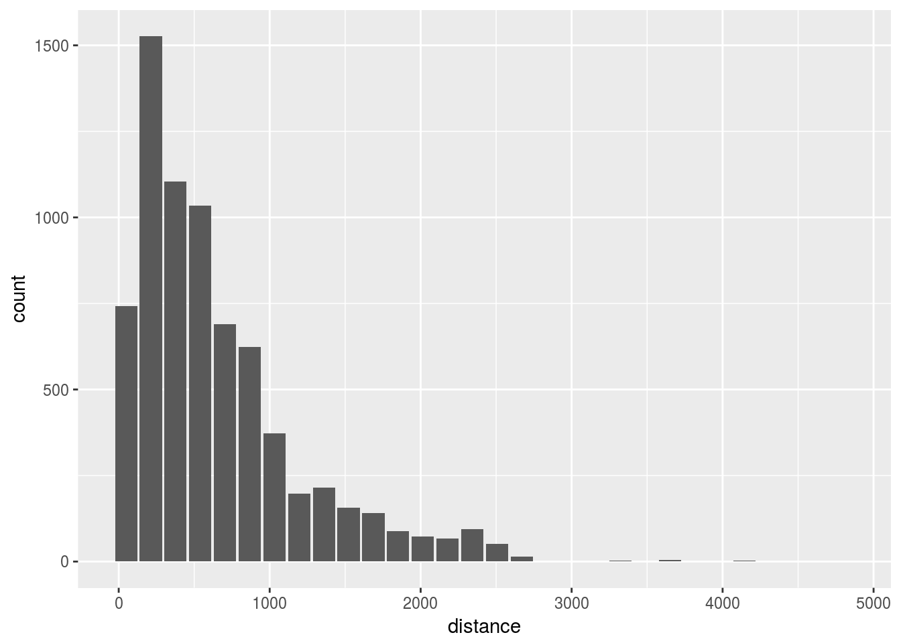

7 Sampling
7.1 SQL Native sampling
Use PostgreSQL TABLESAMPLE clause
- Use
build_sql()andremote_query()to combine a thedplyrcommand with a custom SQL statement
sample_table<- dbGetQuery(con, build_sql(remote_query(flights), " TABLESAMPLE SYSTEM (0.1)"))- Preview the sample data
View(sample_table, 1000)- Test the efficacy of the sampling with a plot
dbplot_histogram(sample_table, distance)
7.2 Sample manually
Use row_number(), sample() and map_df() to create a sample data set
- Create a filtered dataset for with 1 month of data
db_month <- flights %>%
filter(month == 1)- Get the row count
rows <- as.integer(pull(tally(db_month)))- Use
row_number()to create a new column to number each row
db_month <- db_month %>%
mutate(row = row_number()) - Create a random set of 600 numbers, limited by the number of rows
sampling <- sample(1:rows, 600)- Use
%in%to filter the matched sample row IDs with the random set
db_month <- db_month %>%
filter(row %in% sampling)- Verify number of rows
tally(db_month)## # Source: lazy query [?? x 1]
## # Database: postgres [rstudio_dev@localhost:/postgres]
## n
## <S3: integer64>
## 1 600- Create a function with the previous steps, but replacing the month number with an argument. Collect the data at the end
sample_segment <- function(x, size = 600) {
db_month <- flights %>%
filter(month == x)
rows <- as.integer(pull(tally(db_month)))
db_month <- db_month %>%
mutate(row = row_number())
sampling <- sample(1:rows, size)
db_month %>%
filter(row %in% sampling) %>%
collect()
}- Test the function
head(sample_segment(3), 100)## # A tibble: 100 x 30
## year month dayof… dayof… depti… crsd… arrti… crsar… uniq… fligh… tail…
## <dbl> <dbl> <dbl> <dbl> <dbl> <dbl> <dbl> <dbl> <chr> <dbl> <chr>
## 1 2008 3.00 3.00 1.00 1334 1325 1409 1410 WN 342 N501…
## 2 2008 3.00 3.00 1.00 1151 1150 1237 1300 WN 2016 N503…
## 3 2008 3.00 3.00 1.00 1646 1645 1807 1825 WN 2987 N701…
## 4 2008 3.00 3.00 1.00 852 855 1004 1010 WN 32.0 N525…
## 5 2008 3.00 4.00 2.00 1010 1000 1158 1155 WN 2978 N333…
## 6 2008 3.00 4.00 2.00 1402 1400 1642 1655 WN 1374 N279…
## 7 2008 3.00 4.00 2.00 1807 1805 1959 2005 WN 3754 N430…
## 8 2008 3.00 4.00 2.00 2129 2135 39.0 55.0 WN 2965 N234…
## 9 2008 3.00 4.00 2.00 1306 1305 1358 1410 WN 1361 N912…
## 10 2008 3.00 4.00 2.00 1913 1850 2026 2015 WN 1516 N465…
## # ... with 90 more rows, and 19 more variables: actualelapsedtime <dbl>,
## # crselapsedtime <dbl>, airtime <dbl>, arrdelay <dbl>, depdelay <dbl>,
## # origin <chr>, dest <chr>, distance <dbl>, taxiin <dbl>, taxiout <dbl>,
## # cancelled <dbl>, cancellationcode <chr>, diverted <dbl>,
## # carrierdelay <dbl>, weatherdelay <dbl>, nasdelay <dbl>,
## # securitydelay <dbl>, lateaircraftdelay <dbl>, row <S3: integer64>- Use
map_df()to run the function for each month
new_sample <- 1:12 %>%
map_df(~sample_segment(.x))- Verify sample with a histogram
dbplot_histogram(new_sample, distance)